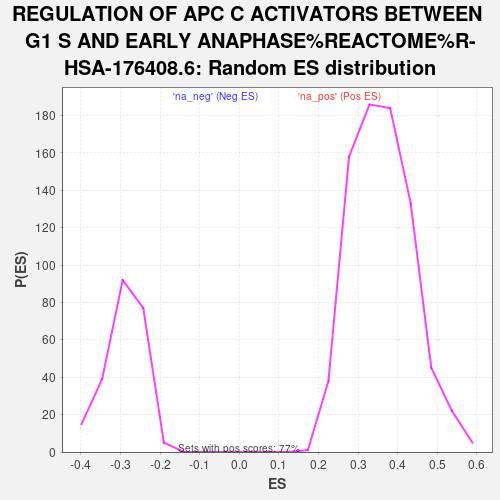

| | | Dataset | MesenvsImmuno_RNASeq_ranks |
| Phenotype | NoPhenotypeAvailable |
| Upregulated in class | na_neg |
| GeneSet | REGULATION OF APC C ACTIVATORS BETWEEN G1 S AND EARLY ANAPHASE%REACTOME%R-HSA-176408.6 |
| Enrichment Score (ES) | -0.7353806 |
| Normalized Enrichment Score (NES) | -2.5337214 |
| Nominal p-value | 0.0 |
| FDR q-value | 0.0 |
| FWER p-Value | 0.0 |
Table: GSEA Results Summary
 Fig 1: Enrichment plot: REGULATION OF APC C ACTIVATORS BETWEEN G1 S AND EARLY ANAPHASE%REACTOME%R-HSA-176408.6
Fig 1: Enrichment plot: REGULATION OF APC C ACTIVATORS BETWEEN G1 S AND EARLY ANAPHASE%REACTOME%R-HSA-176408.6
Profile of the Running ES Score & Positions of GeneSet Members on the Rank Ordered List
| SYMBOL | RANK IN GENE LIST | RANK METRIC SCORE | RUNNING ES | CORE ENRICHMENT | | 1 | BTRC | 1983 | 2.482 | -0.1226 | No |
| 2 | PSMD1 | 5314 | 0.226 | -0.3421 | No |
| 3 | ANAPC2 | 5867 | 0.103 | -0.3783 | No |
| 4 | CDC27 | 6006 | 0.078 | -0.3872 | No |
| 5 | PSME3 | 7201 | -0.124 | -0.4657 | No |
| 6 | PSME4 | 7688 | -0.217 | -0.4971 | No |
| 7 | FZR1 | 7720 | -0.223 | -0.4984 | No |
| 8 | PSMC4 | 7911 | -0.266 | -0.5101 | No |
| 9 | CDC23 | 7930 | -0.269 | -0.5103 | No |
| 10 | ANAPC4 | 7967 | -0.278 | -0.5117 | No |
| 11 | CDC16 | 8331 | -0.365 | -0.5345 | No |
| 12 | RPS27A | 8450 | -0.395 | -0.5409 | No |
| 13 | ANAPC1 | 8952 | -0.525 | -0.5723 | No |
| 14 | CUL1 | 9395 | -0.661 | -0.5992 | No |
| 15 | PSMD5 | 9468 | -0.680 | -0.6017 | No |
| 16 | ANAPC16 | 9499 | -0.690 | -0.6013 | No |
| 17 | SKP1 | 9645 | -0.744 | -0.6083 | No |
| 18 | PSMD3 | 9736 | -0.777 | -0.6116 | No |
| 19 | UBE2D1 | 9880 | -0.828 | -0.6182 | No |
| 20 | PSMD8 | 9916 | -0.840 | -0.6176 | No |
| 21 | CCNA1 | 10008 | -0.872 | -0.6206 | No |
| 22 | UBB | 10689 | -1.145 | -0.6617 | No |
| 23 | CDC26 | 10741 | -1.170 | -0.6610 | No |
| 24 | UBC | 10939 | -1.264 | -0.6697 | No |
| 25 | PSMD12 | 11082 | -1.325 | -0.6745 | No |
| 26 | PSMD2 | 11084 | -1.326 | -0.6700 | No |
| 27 | PSMC5 | 11112 | -1.343 | -0.6672 | No |
| 28 | ANAPC5 | 11845 | -1.707 | -0.7098 | No |
| 29 | PSMF1 | 11875 | -1.726 | -0.7057 | No |
| 30 | BUB1B | 12023 | -1.812 | -0.7092 | No |
| 31 | PSMB7 | 12026 | -1.814 | -0.7031 | No |
| 32 | PSMC1 | 12253 | -1.984 | -0.7112 | No |
| 33 | PSMD10 | 12407 | -2.091 | -0.7141 | No |
| 34 | PSMB5 | 12517 | -2.167 | -0.7139 | No |
| 35 | PSMA1 | 12543 | -2.193 | -0.7080 | No |
| 36 | PSMD6 | 12747 | -2.366 | -0.7133 | No |
| 37 | PSMD13 | 13082 | -2.685 | -0.7261 | Yes |
| 38 | UBA52 | 13090 | -2.697 | -0.7173 | Yes |
| 39 | ANAPC7 | 13096 | -2.704 | -0.7083 | Yes |
| 40 | PSMA7 | 13200 | -2.786 | -0.7056 | Yes |
| 41 | CDK2 | 13406 | -2.993 | -0.7088 | Yes |
| 42 | PSMB2 | 13467 | -3.054 | -0.7023 | Yes |
| 43 | PSMC3 | 13560 | -3.166 | -0.6975 | Yes |
| 44 | UBE2S | 13673 | -3.310 | -0.6935 | Yes |
| 45 | ANAPC10 | 13731 | -3.391 | -0.6856 | Yes |
| 46 | PSMD11 | 13783 | -3.454 | -0.6771 | Yes |
| 47 | PSMD9 | 13825 | -3.498 | -0.6677 | Yes |
| 48 | PSMD14 | 13984 | -3.783 | -0.6652 | Yes |
| 49 | UBE2C | 14022 | -3.851 | -0.6544 | Yes |
| 50 | PSMD7 | 14029 | -3.858 | -0.6415 | Yes |
| 51 | PSMC6 | 14079 | -3.952 | -0.6311 | Yes |
| 52 | ANAPC11 | 14136 | -4.055 | -0.6209 | Yes |
| 53 | PSMB6 | 14198 | -4.173 | -0.6105 | Yes |
| 54 | CDK1 | 14217 | -4.205 | -0.5972 | Yes |
| 55 | PSMA4 | 14233 | -4.228 | -0.5837 | Yes |
| 56 | CDC20 | 14308 | -4.403 | -0.5734 | Yes |
| 57 | PSMA2 | 14457 | -4.730 | -0.5669 | Yes |
| 58 | UBE2E1 | 14561 | -4.989 | -0.5566 | Yes |
| 59 | MAD2L1 | 14599 | -5.093 | -0.5415 | Yes |
| 60 | PSMB3 | 14612 | -5.115 | -0.5247 | Yes |
| 61 | PSMB1 | 14628 | -5.164 | -0.5079 | Yes |
| 62 | BUB3 | 14633 | -5.176 | -0.4903 | Yes |
| 63 | PLK1 | 14661 | -5.259 | -0.4740 | Yes |
| 64 | FBXO5 | 14679 | -5.311 | -0.4569 | Yes |
| 65 | PSMA3 | 14819 | -5.889 | -0.4458 | Yes |
| 66 | PSMC2 | 14822 | -5.915 | -0.4256 | Yes |
| 67 | CCNB1 | 14832 | -5.955 | -0.4057 | Yes |
| 68 | CCNA2 | 14841 | -5.995 | -0.3855 | Yes |
| 69 | PSMD4 | 15077 | -8.499 | -0.3718 | Yes |
| 70 | PSMB4 | 15113 | -9.188 | -0.3425 | Yes |
| 71 | PSMA5 | 15135 | -10.148 | -0.3090 | Yes |
| 72 | PSMA6 | 15141 | -10.422 | -0.2734 | Yes |
| 73 | PSMB10 | 15161 | -12.009 | -0.2334 | Yes |
| 74 | PSMB8 | 15186 | -15.769 | -0.1807 | Yes |
| 75 | PSME1 | 15187 | -16.251 | -0.1247 | Yes |
| 76 | PSME2 | 15191 | -17.951 | -0.0631 | Yes |
| 77 | PSMB9 | 15193 | -18.359 | -0.0000 | Yes |
Table: GSEA details [plain text format]

Fig 2: REGULATION OF APC C ACTIVATORS BETWEEN G1 S AND EARLY ANAPHASE%REACTOME%R-HSA-176408.6: Random ES distribution
Gene set null distribution of ES for REGULATION OF APC C ACTIVATORS BETWEEN G1 S AND EARLY ANAPHASE%REACTOME%R-HSA-176408.6